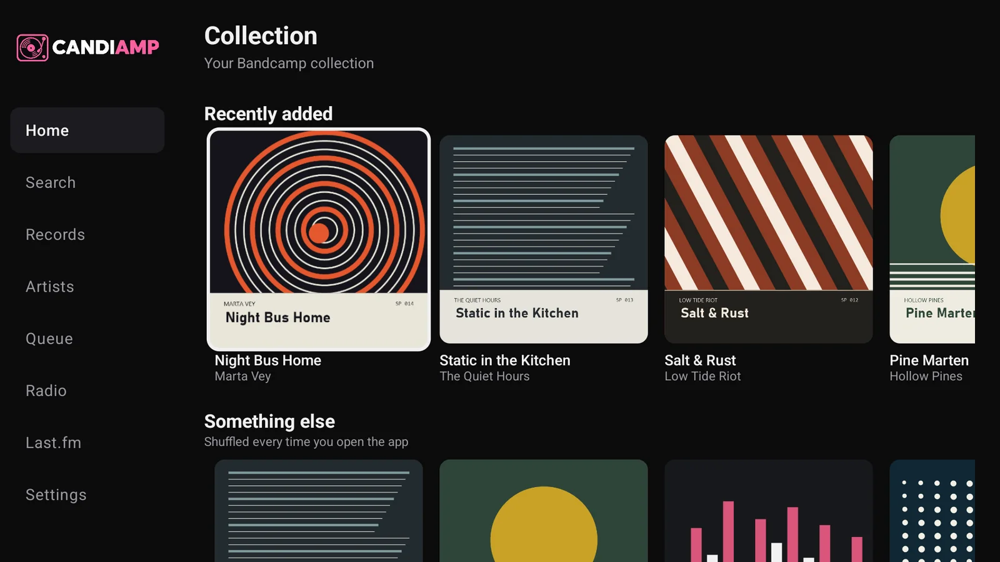
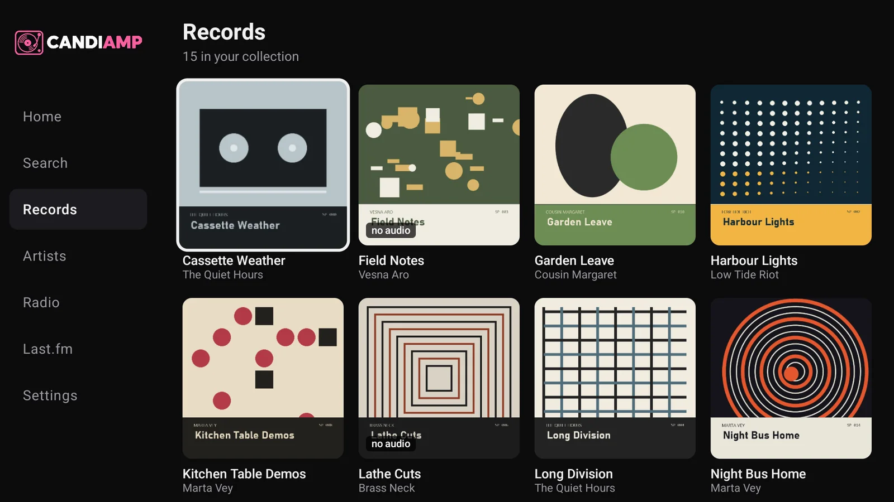
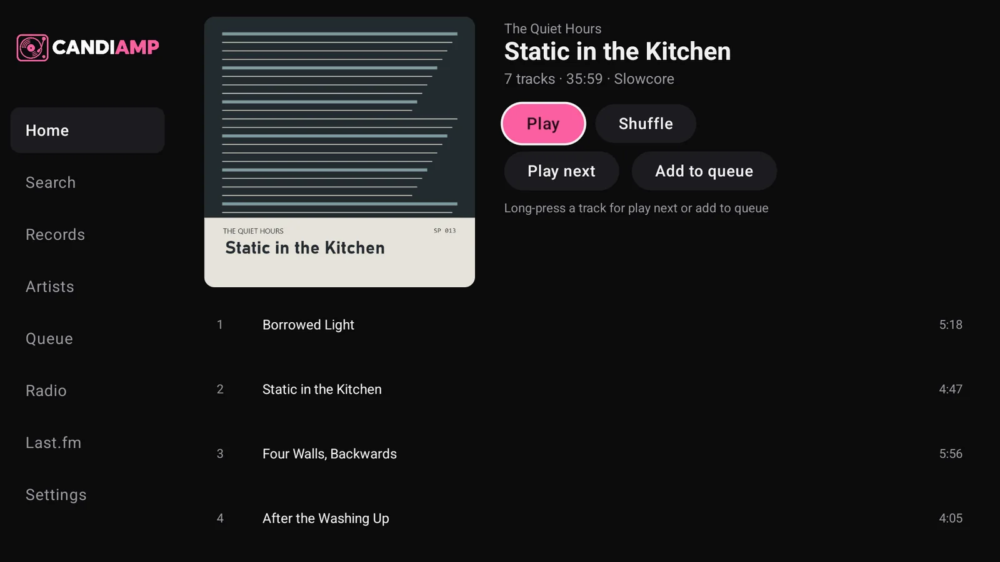
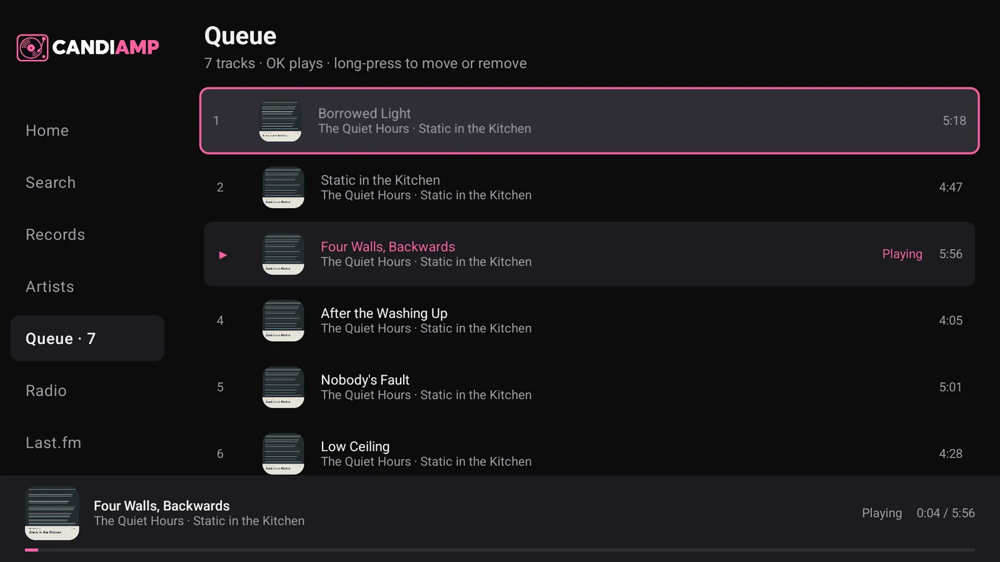
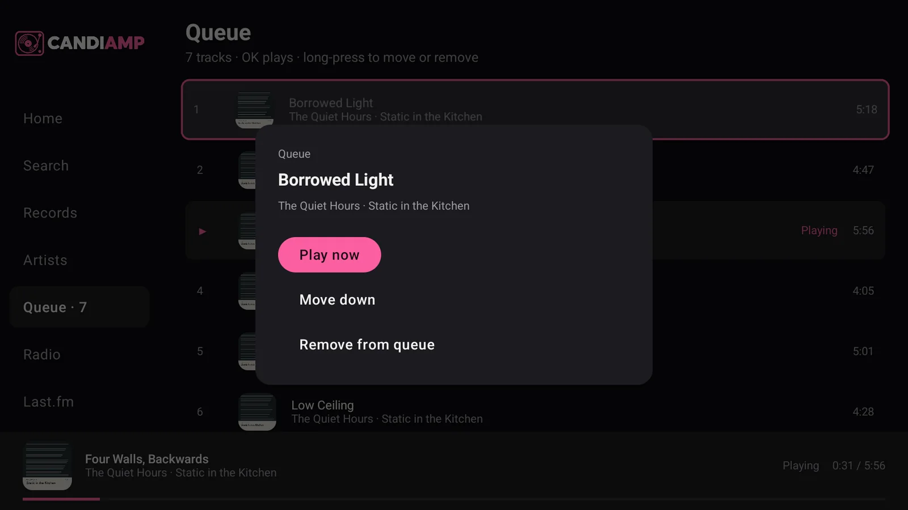
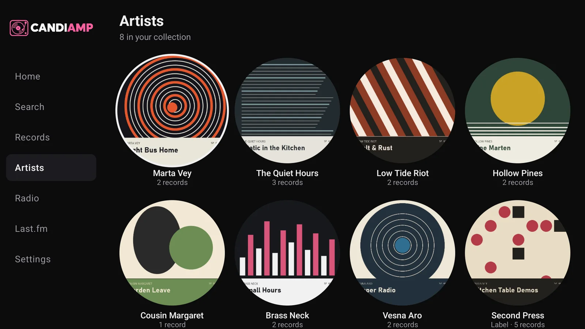
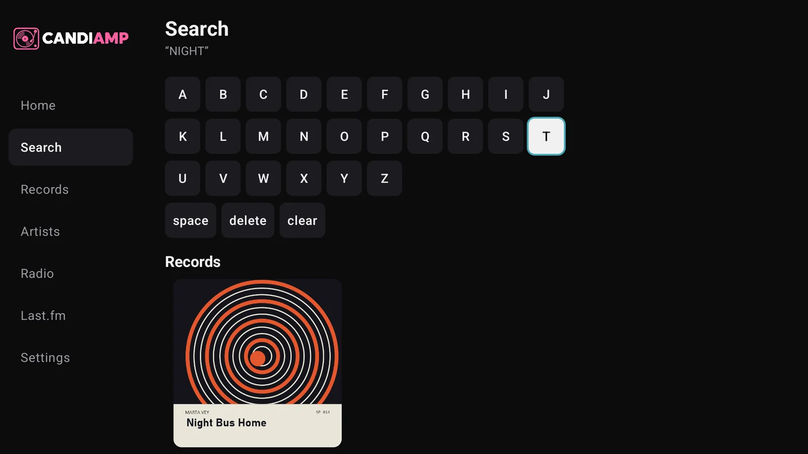
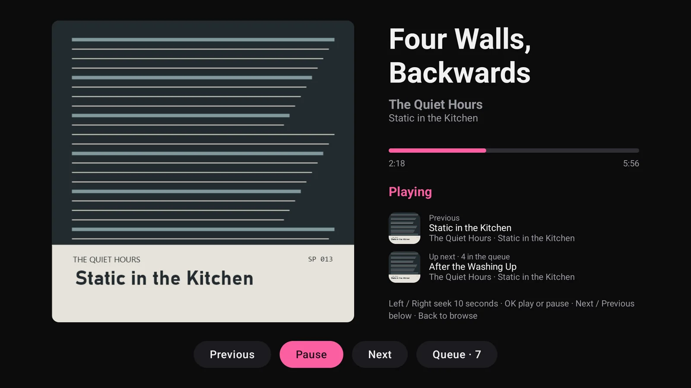
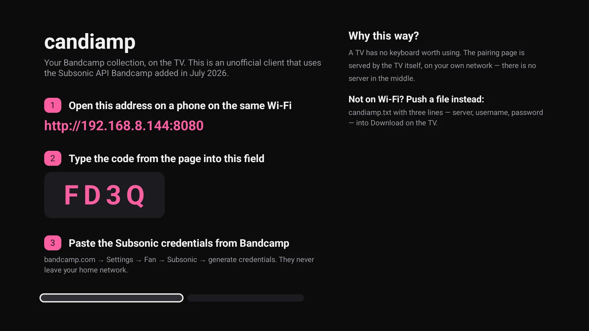
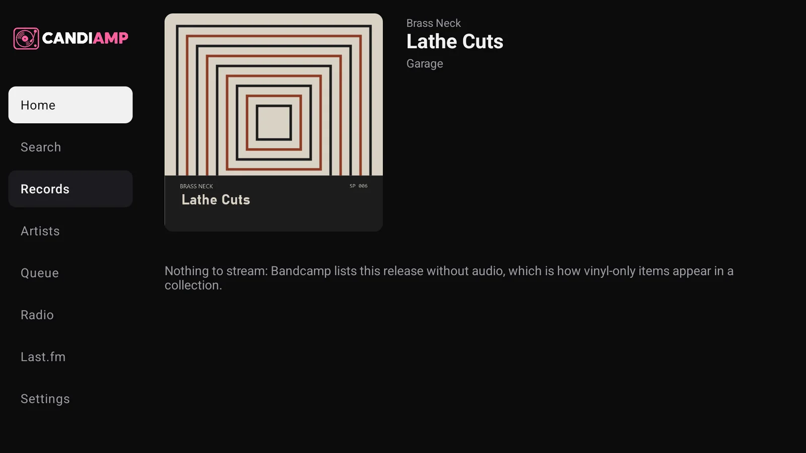

Unofficial Android TV client
Your Bandcamp collection, on the TV.
candiamp talks to the Subsonic endpoint Bandcamp shipped in July 2026 — straight from the TV. No server in the middle, no Bandcamp account, no browser in the way.
See the screens How to install
Working, on a TCL Google TV (Android 14) — sideloaded, and built for a 1080p canvas and a D-pad rather than a pointer.

What it does
Everything the collection needs, at a distance of three metres.
-
Browse the collection
Artists → records → tracks, in the order Bandcamp keeps them, cached on disk. Labels sit in the same list as artists, so candiamp marks them and says what they are.
-
Search what you own
search3across your collection with an on-screen keyboard, artist and album details on track results, and playback straight from a result. -
Play, and actually seek
256 kbps VBR MP3, and the server answers
206 Partial Content, so scrubbing works — ten seconds at a time. The player carries Previous, Pause and Next buttons, so the media keys are a shortcut rather than a requirement. -
A real queue
The player's timeline, played tracks included. Play next or add to queue from a record or any track; long-press a row to move or remove it. The sidebar carries the count.
-
Leave it playing
A MediaSession keeps audio going when you go back to the TV's home screen, like any other media app. The remote's play and pause keys keep working.
-
Pair from your phone
The TV serves a small page on your own network and shows a four-character code. Paste the Subsonic credentials from a phone; the password is sealed with the Android keystore.
-
Bandcamp Radio
Scraped from
bandcamp.com/radio, because the API has none. An episode plays as one stream with a timestamped tracklist you can jump around. -
Last.fm, if you want it
Link an account and scrobbles go out once a track passes thirty seconds and half its length, through a queue that survives restarts and offline evenings.
-
Made for a remote
Focus rings, rows that fit a 1080p layout, and OK / play-pause / next / previous / seek. Long-press is the second click, for the queue and every track. No pointer, no keyboard, no squinting.
Screens
The app running against a demonstration collection. The artists, records and artwork in these shots are invented for the page — no real Bandcamp library is shown.
-

RecordsThe grid, with vinyl-only entries marked no audio. -

A recordPlay or Shuffle it, or push the whole record into the queue. -

The queuePlayed tracks stay; the current one is marked. -

Queue actionsLong-press a row: play now, move, remove. -

ArtistsArtist pictures, and labels that admit it. -

SearchRecords and tracks, playable from the results. -

The playerBig sleeve, the next track in view, the queue one button away. -

First runType on the phone, not with the remote.


Why a native app
Bandcamp's Subsonic endpoint sends no CORS headers — not on the response,
and not on the preflight. Every browser-based client fails at login, because Chromium refuses
to hand a cross-origin response to JavaScript without them. A native client sends no
Origin header and is not subject to the policy at all. That is the whole reason
candiamp is Kotlin rather than a wrapper.
A WebView around bandcamp.com is the other road, and it is a dead end on a TV:
no focus order for a D-pad, no media session, and some TV platforms have no browser at all.
The rest of the API, briefly
The endpoint answers in four different shapes — HTTP 500 with an empty body for bad
credentials, a JSON error for an unknown endpoint, an empty Subsonic envelope for a stub,
and XML for a bad stream id — and candiamp normalises all four. Calls live under
/rest/ even though the published URL does not. ping says yes to
anything, so a connection test asks for the artists instead. And artist artwork has to come
from a record, because getArtists hands the same cover to several artists at
once.
Missing, and why
The gaps come from Bandcamp's endpoint, not from a lack of buttons.
- Playlists
- Bandcamp exposes
getPlaylistsbut notgetPlaylist, so a playlist's tracks cannot be read. - Favourites and likes
staraccepts the request and does nothing;unstaris absent.- Offline downloads
downloadreturns an error. The API has no download role.- A quality setting
maxBitRateis ignored. There is one encode, and it is a good one.- Lyrics, similar artists, song info
- Not implemented by Bandcamp, so not shown here.
- Vinyl-only records
- Listed and marked no audio, with Play hidden — the same as the website shows them.

Install
Build it and sideload it onto your own TV.
-
What you need
JDK 21+, the Android SDK (platform 37),
adb, and a TV with network debugging turned on. -
Connect the TV
adb connect <tv-ip>:5555 -
Build and install
./gradlew assembleDebug adb install -r app/build/outputs/apk/debug/app-debug.apk -
Pair it from a phone
The TV shows
http://<tv-ip>:8080and a four-character code. Open that address on a phone on the same Wi-Fi, paste the Subsonic credentials from bandcamp.com → Settings → Fan → Subsonic, and press Connect. Nothing leaves the LAN, and the password is sealed with the Android keystore.No Wi-Fi on the TV? Push a file instead — three lines, server, username and password:
adb push candiamp.txt /sdcard/Download/candiamp.txtthen choose Import a file instead on the pairing screen.